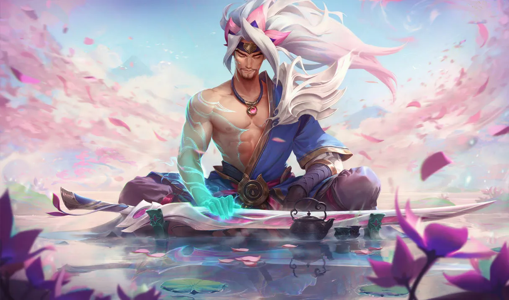
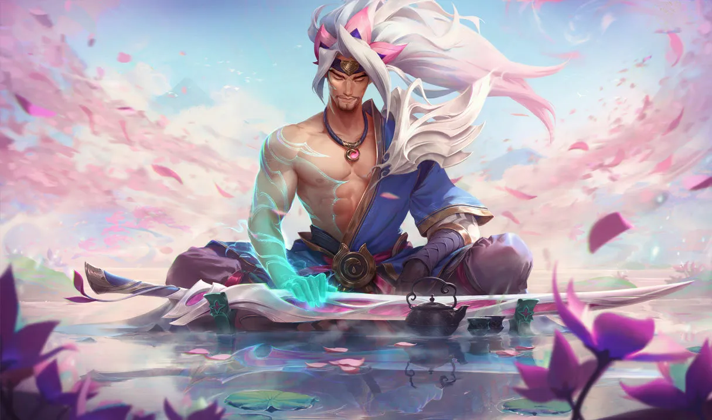
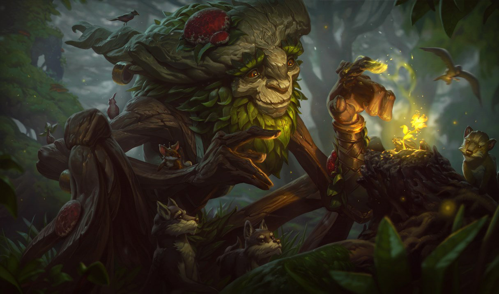
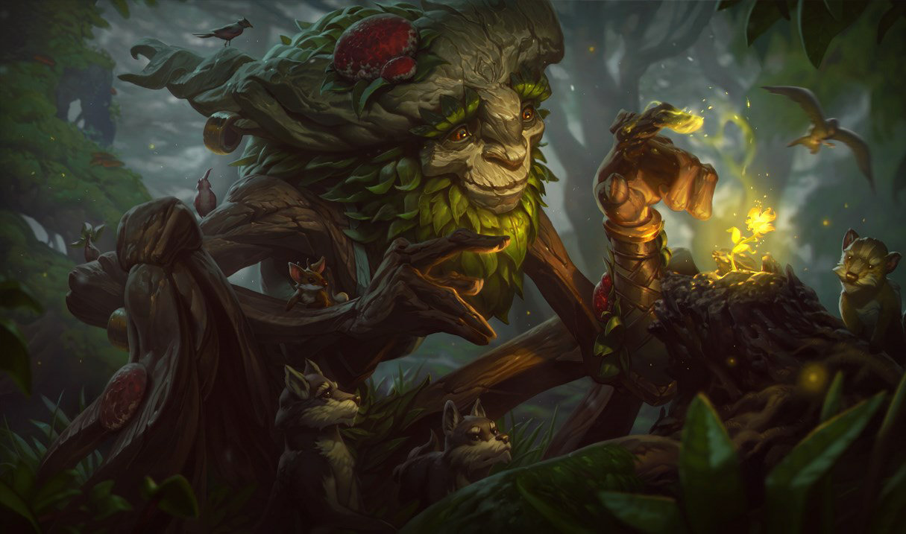

Choose Your Champion


Mordekaiser
The Iron Revenant
Twice slain and thrice born, Mordekaiser is a brutal warlord from a foregone epoch, who uses his necromantic sorcery to bind souls into an eternity of servitude. Few now remain who remember his earlier conquests, or know the true extent of his powers—but there are some ancient souls that do, and they fear the day when he may return to claim dominion over both the living and the dead.
Top Lane
Irelia
The Blade Dancer
The Noxian occupation of Ionia produced many heroes, none more unlikely than young Irelia of Navori. Trained in the ancient dances of her province, she adapted her art for war, using the graceful and carefully practised movements to levitate a host of deadly blades. After proving herself as a fighter, she was thrust into the role of resistance leader and figurehead, and to this day remains dedicated to the preservation of her homeland.
Top - Mid Lane


Sett
The Boss
A leader of Ionia’s growing criminal underworld, Sett rose to prominence in the wake of the war with Noxus. Though he began as a humble challenger in the fighting pits of Navori, he quickly gained notoriety for his savage strength, and his ability to take seemingly endless amounts of punishment. Now, having climbed through the ranks of local combatants, Sett has muscled to the top, reigning over the pits he once fought in.
Top Lane
Gwen
The Hallowed Seamstress
A former doll transformed and brought to life by magic, Gwen wields the very tools that once created her. She carries the weight of her maker’s maker’s love with every step, taking nothing for granted. At her command is the Hallowed Mist, an ancient and protective magic that has blessed Gwen’s scissors, needles, and sewing thread. So much is new to her, but Gwen remains joyfully determined to fight for the good that survives in a broken world.
Top Lane
 

Yasuo
The Unforgiven
An Ionian of deep resolve, Yasuo is an agile swordsman who wields the air itself against his enemies. As a proud young man, he was falsely accused of murdering his master—unable to prove his innocence, he was forced to slay his own brother in self-defense. In time, his master’s true killer was revealed, and his brother mysteriously returned from death, yet Yasuo still could not forgive himself for all he had done. Now, he wanders the world with only the wind to guide his blade.
Mid Lane
Jhin
The Virtuoso
Jhin is a meticulous criminal psychopath who believes murder is art. Once an Ionian prisoner, but freed by shadowy elements within Ionia’s ruling council, the serial killer now works as their cabal's assassin. Using his gun as his paintbrush, Jhin creates works of artistic brutality, horrifying victims and onlookers. He gains a cruel pleasure from putting on his gruesome theater, making him the ideal choice to send the most powerful of messages: terror.
Bot Lane - ADC
 

Ivern
The Green Father
Ivern, known to many as Bramblefoot or the Old Woodsman, is a peculiar half-man, half-tree who roams the wilds of Runeterra, cultivating life everywhere he goes. He knows all the secrets of the natural world, and holds deep friendships with things that grow, fly, and scuttle. Ivern enriches the forests, imparts strange wisdom to any mortal he meets, and occasionally entrusts loose-lipped butterflies with his secrets.
Jungle
Bard
The Wandering Caretaker
Atraveler from beyond the stars, Bard is an agent of serendipity who strives to maintain the harmony between creation, and the cold indifference of what lies beyond it. Many Runeterrans sing songs that ponder his extraordinary nature, yet they all agree that the cosmic vagabond is drawn to artifacts of great magical power. Surrounded by a jubilant choir of helpful meeps, it is impossible to mistake his actions as malevolent, as Bard always serves the greater good… in his own odd way.
Bot Lane - Support